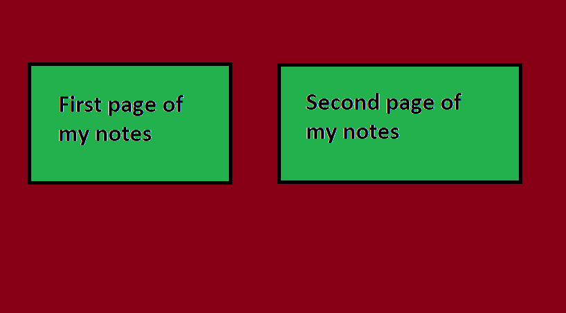

About tables
I just learned about tables, they are a little complicated when you first learn them but if you understand these they are easy.
The <table> tag allows you to make a table, you can change it's position with align attribute, and in order to make the table visible you should also add the border attribute, the <table> tag should be closed with </table>.
Now, between <table> </table> there are some tags you need to use in order to create table rows and table cells, the <tr> tag creates a table row, to create a table cell inside this row, you write the <td> tag which stands for table data, it should close with </td> and you write the text that you want the cell to have between the <td> and </td> tags, after you have added as many cells as you like you close the <tr> tag with </tr>, then you can create another row if you want with more cells and after you are done you close the table with </table>.
A cell under another cell will take the same size as the one above it, or if its bigger than the one above it, then the one above it will take the same size as it, the size of the cell changes depending on how much you write inside the cell, a cell with just one letter will be small, a cell with ten letters will be bigger, a cell with no letters at all will be extremely thin, so if you want the first cell of each row to be empty, but you also want it to have some space and not be thin, you can use width attribute. The cells will take the width of the biggest cell in their column, and they also take the height of the tallest cell in their row, so if one row has no text, just cells, the cells will be extremely short, to change that, you either use the height attribute, or you can write <br> inside one of the cells, so it's size change, then all the cells in the same row with it will get the same size.
Code:
<table align="center" border="3">
<tr>
<td width="100"> </td> <!-- Changes width of the first column to 100 -->
<td width="100"> </td> <!-- Changes width of the second column to 100 -->
<td> Yellow is cool </td> <!-- The text changes the height of the first row to the default height -->
</tr>
<tr>
<td> </td>
<td> </td>
<td> <br> </td> <!-- The br changes the height of the second row to the default height >
</tr>
<tr>
<td> </td>
<td> </td>
<td height="15"> </td> <!-- Changes the height of the third row to 15 -->
</tr>
<tr height="15"> <!-- Changes the height of the fourth row to 15 -->
<td> </td>
<td> </td>
</tr>
</table>
Output:
| Yellow is cool | ||
| |
||
The colspan and rowspan attributes are used to change the columns and rows a cell takes, for example, I may want the first cell to take all three columns, lets say there are three columns, I would write <td colspan="3"> example </td>, if there was a fourth column, the next table data I added would get to the fourth column, lets try an example so you understand it better, I will make a table to which the second cell of the first row will take three columns and the first cell of the second row will take three rows, lets do this.
Code:
<table align="center" border="3">
<tr>
<td> </td>
<td colspan="3"> Example </td>
</tr>
<td rowspan="3"> Example </td>
<td> example </td>
<td> example </td>
<td> example </td>
</tr>
<tr>
<td> example </td>
<td> example </td>
<td> example </td>
</tr>
<tr>
<td> example </td>
<td> example </td>
<td> example </td>
</tr>
</table>
Output:
| Example | Example | example | example | example |
| example | example | example | |
| example | example | example | |
The bgcolor attribute is used to change the background color, its not used only for tables, you can also use it on <body> to change the background of the whole page, and it also can be used on other elements as well, you can use this attribute, and other attributes too such as align, etc, to costumize the whole table, a row of the table, or just a cell of the table, also, another element I didn't mention before is the <th> tag, which stands for table header, it works like a table data, but the text inside it is bolded, since its a header, lets try this:
Code:
<table height="200" width="250" align="center" border="3" >
<tr>
<th bgcolor="red"> Red </th>
<th bgcolor="blue"> Blue </th>
<th bgcolor="yellow"> Yellow </th>
</tr>
<tr>
<td rowspan="2"> one </td>
<td colspan="2"> two </td>
</tr>
<tr bgcolor="grey">
<td> three </td>
<td> four </td>
</tr>
</table>
Outcome:
| Red | Blue | Yellow |
|---|---|---|
| one | two | |
| three | four | |
As I said before, there are many attributes you can use, if you want the text in a cell to be at the center of the cell for example you use align attribute, now, lets try to put an image" inside the <a> tag just like I did in the page one of my notes, so when I press the image it opens another website, we will put these images inside the cells of the table, lets try this out:
Code:
<table width="400" height="400" align="center" border="3" bgcolor="yellow">
<tr>
<th> First page of my notes </th>
<th> Second page of my notes </th>
</tr>
<td align="center"> <a href="../HTML-Notes/Notes.html" target="_blank"> <img src="../images/up.jpg" width="400" height="400"> </a> </td>
<td align="center"> <a href="../HTML-Notes/Notes2.html" target="_blank"> <img src="../images/up.jpg" width="400" height="400"> </a> </td>
</tr>
</table>
Outcome:
| First page of my notes | Second page of my notes |
|---|---|
 |
|
Something I wanna add is that you can put a title to your table by using the <caption> tag right after the <table> tag, this tag needs to be closed after you write the text you want to use as the title, it looks like this: <table> <caption> your title </caption> <tr> etc,etc </table>
| One | Two | Three | ||||||
| Red | Green | Blue |
| ISBN | Title | Price |
|---|---|---|
| 3476896 | My first HTML | $53 |
Note: The <colgroup> tag must be a child of a <table> element, after any <caption> elements and before any <thead>, <tbody>, <tfoot>, and <tr> elements.
About iframe element:
I just learned about iframe, it allows you to put another website's window in your website, to do that you simply write <iframe src = "url" width = "700" height = "400"> </iframe>, we will also put it in a paragraph in order to place it at the center of our page, it will look like this:
You can find more informations about the iframe element in the fourth page of my notes.
About map element:
I just learned about maps, you know how in maps you can press in an area and it opens a description of that area, right? thats what maps are, however, it can be used for many things, it basically allows you to put clickable areas on an image.
To use <map> element you first should add your image, just like how we learned in page one of the notes, one new attribute
however should now be used, in order to
The <map name="name"> tag is used to create the map, before I spoke about the usemap="#name" attribute, this attribute is used to connect the image with the map, and it should have the same value with the name of the <map name="name"> tag, if for example the the tag had this name: <map name="example"> then in order to connect the map with the image the image should had this attribute inside it: usemap="#example", I hope you understand.
<map> tag should be closed with </map>, inside it we add the <area> tag, this is used to create a clickable area, and three main attributes should be used inside this tag, shape="ract/circle/poly", coords="depends on the shape", href="url or file name". There are other attributes you can add too like title attribute which will make a title appear whenever you point your mouse on that area, and others, but the three I wrote before are the main ones that are needed in order for the area to work.
I now will make an example using the ract shape, to find the coords you can put the image in any painting software, put your mouse and the left upper corner of the area you want to use, write down the x and y coordinates, then put your mouse at the down right corner and write down the x and y coordinates again, it should be like this: coords="x y,x y".
Code:
<p align="center">
<img src="../images/something.jpg" alt="something" usemap="#mynotes">
</p>
<map name="mynotes">
<area shape="ract" title="Click this to open the first page of my notes" href="../HTML-Notes/Notes.html" coord="49 95, 330 261" target="_blank">
<area shape="ract" title="Click this to open the second page of my notes" href="../HTML-Notes/Notes2.html" coord="404 95,749 259" target="_blank">
</map>
Outcome:

If I remember correctly the coords of the circle are coords="cx cy,r" and you can find these firstly by pointing your mouse at the center of the circle area you want in a painting software, write the x and y coordinates, then point your mouse at the top of the circle, write down the y number, then point your mouse at the bottom of your circle, write again the y number, then you do y1-y2 and find how much is the radius of the circle.
For the poly the coordinates look like this I believe coords="x y,x y,x y,x y,....", you simply describe that path of the lines by writing from what x y position they start, at what x y position it goes next, etc, etc.
Here is a tutorial that helped me a lot with the coordinates, watch it any time for reference:
Inline and block elements:
The block elements are the ones that start a new line and take the whole line, for example, <h1>, <p>, <li>, <ol>, <ul>, these kind of stuff, inline elements are elements that usually are used inside the block elements, for example, when I want to put a link inside a paragraph, or when I want to make a word strong with <strong> element, these kind of stuff
The <div> element is a block-level element that is often used as a container for other HTML elements, its used together with some CSS styling, the <div> element can be used to style many blocks together, like, ten paragraphs all together for example if the paragraphs are between <div> and </div> elements.
The <span> element is an inline element that is used as a container for some text. When used together with CSS, the <span> element can be used to style parts of the text, for example, it can change the color of a word inside a paragraph if the word is between <span> and </span> elements.